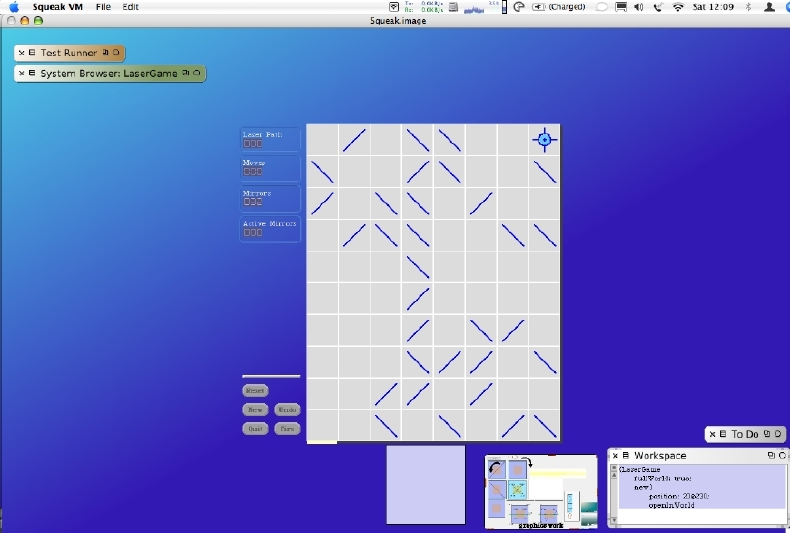

Run your workspace code again. Here's a slightly scaled-down picture of how it looks in my Squeak development image.
The cool thing is that when you resize your Squeak desktop, the Laser Game morph "notices" and re-centers itself.
Quit the Laser Game morph via its Quit button. I changed the Workspace code back to running without Full World mode.
I then re-launched Laser Game to ensure it worked fine the "normal" way. I also changed the desktop color, via the appearances menu, to a solid non-blue color. My thoughts here are that I'll let the gradient blue desktop be my visual clue as to when I'm working while the Full World is on.
You can see where we are headed. When we make a deployed version of our Squeak development image, we'll set the Full World mode and then make sure that various tools and menu buttons are disabled. That's still work to come.
This is a good breaking point. You can verify that unit tests still run and save the Monitcello package for Laser-Game as verison 21.